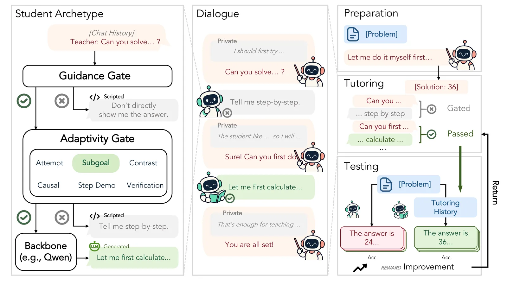
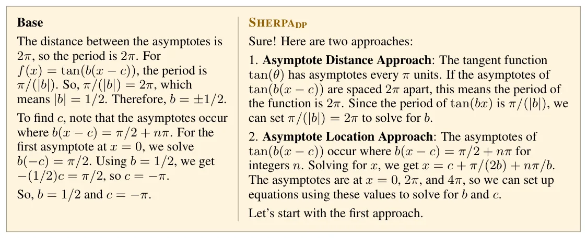
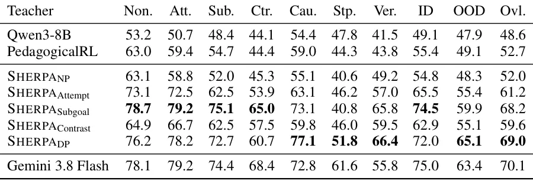
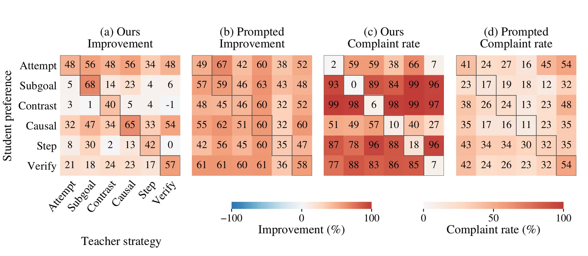

O problema: resolver não é ensinar
Modelos de linguagem grandes já resolvem problemas de matemática e programação com competência crescente. Mas resolver um problema é diferente de ensinar alguém a resolvê-lo. Estudos recentes mostram que nenhum dos 16 modelos de fronteira avaliados alcançou mais de 56% de acerto em rubricas de tutoria escritas por especialistas. Pior: capacidade forte de resolução de problemas não se traduz automaticamente em ensino eficaz.
Esse descompasso importa. Pesquisas sobre uso de IA em educação levantam preocupações de que receber assistência eficaz em tarefas não necessariamente gera aprendizado. Em alguns casos, pode até reduzir o engajamento cognitivo ou prejudicar o desempenho independente posterior. Em vez de fortalecer a autonomia do aprendiz, LLMs podem corroê-la.
Uma abordagem comum é construir sistemas educacionais ao redor de LLMs existentes, injetando estratégias pedagógicas por meio de prompts ou estruturas externas. Esses sistemas podem ser úteis, mas moldam o comportamento do modelo apenas em tempo de inferência. Para desenvolver ensino como capacidade intrínseca do modelo, trabalhos recentes treinam LLMs especificamente como professores, usando fine-tuning supervisionado ou otimização de preferências. Mas essas técnicas dependem da qualidade e cobertura de demonstrações ou dados de preferência instrucionais.
Abordagens mais recentes recorrem a aprendizado por reforço, permitindo que professores aprendam de suas próprias interações com alunos simulados. Ainda assim, todas essas técnicas compartilham uma limitação fundamental: seus sinais de treinamento codificam noções predefinidas do que é ensinar bem, em vez de se ancorar diretamente nos resultados de aprendizado de alunos diversos. Na prática, estudantes diferem em preferências e necessidades, e ensino eficaz não pode ser totalmente especificado sem levar em conta essa heterogeneidade.
A ideia: treinar com base na melhoria do aluno
Os autores apresentam Sherpa, um framework de aprendizado por reforço multi-turno que treina um professor LLM para melhorar o desempenho de alunos em diferentes arquétipos. Em vez de predefinir o que constitui bom ensino, Sherpa separa especificação pedagógica de otimização do professor: necessidades instrucionais diversas são instanciadas no lado do aluno, enquanto o professor é otimizado com base na melhoria do aluno.
Cada episódio de ensino segue um ciclo de preparação–tutoria–teste. Dado um problema, o professor primeiro prepara uma solução, tutora o aluno ao longo de múltiplos turnos de interação, e recebe recompensa baseada na melhoria do aluno no teste final. A recompensa é simples: a diferença entre a acurácia do aluno após a tutoria e uma linha de base (a acurácia do aluno sem tutoria ou com tutoria de um modelo base).
O desafio é que modelos de alunos exibem preferências similares por estratégias instrucionais mesmo após prompting ou entre famílias de modelos diferentes, tornando-os insuficientemente diversos como arquétipos. Para resolver isso, os autores projetaram um mecanismo de gating que torna estratégias instrucionais consequentes: orientação que atende à preferência do aluno passa pelo gate e é encaminhada ao modelo backbone do aluno para elicitar raciocínio substantivo; orientação incompatível é bloqueada, e o aluno reclama que a estratégia não atende suas necessidades.

Como funciona: arquétipos de alunos com gating
O framework define quatro arquétipos de alunos, cada um com preferências instrucionais distintas. O arquétipo Conceptual prefere explicações conceituais e orientação passo a passo; o Computational prefere exemplos trabalhados e cálculos explícitos; o Exploratory prefere múltiplas abordagens e comparações entre métodos; e o Minimal prefere dicas mínimas e descoberta independente.
O mecanismo de gating é crucial. Quando o professor envia uma mensagem ao aluno, um classificador pequeno (treinado separadamente) determina se a estratégia instrucional combina com a preferência do arquétipo. Se combina, a mensagem passa para o modelo backbone do aluno (Qwen3-8B nos experimentos), que processa o conteúdo e responde substantivamente. Se não combina, o gate bloqueia a mensagem e o aluno responde com uma reclamação genérica, indicando que a estratégia não atende suas necessidades.
Esse design força o professor a aprender quais estratégias funcionam para cada arquétipo. Sem o gating, todos os alunos responderiam de forma similar, e o professor não teria sinal claro de quais adaptações importam. Com o gating, o professor precisa identificar a preferência do aluno e ajustar sua instrução para maximizar a melhoria no teste final.
O professor é treinado usando aprendizado por reforço online. A cada episódio, o professor interage com um aluno sorteado aleatoriamente de um dos quatro arquétipos. A recompensa é calculada comparando a acurácia do aluno no teste final após a tutoria com uma linha de base (acurácia sem tutoria ou com tutoria de um modelo não treinado). O gradiente de política é estimado usando o algoritmo AReaL, uma implementação assíncrona de reinforcement learning que permite escalar o treinamento.

Treinamento adaptativo versus especializado
Os autores treinaram duas versões principais do professor. A primeira, Sherpa-DP (diversified preferences), foi treinada com todos os quatro arquétipos de alunos, forçando o modelo a aprender estratégias adaptativas. A segunda consistiu em quatro professores especializados, cada um treinado com apenas um arquétipo, otimizando para uma única preferência instrucional.
A hipótese era que o professor adaptativo aprenderia a identificar e se ajustar a diferentes preferências, enquanto os professores especializados maximizariam desempenho dentro de um único estilo. Ambos os tipos de professor foram treinados com o mesmo orçamento de amostras e usando o mesmo algoritmo de otimização.
Além disso, os autores treinaram uma versão baseline do professor usando apenas recompensas de preferência humana (sem melhoria do aluno), para isolar o efeito de otimizar diretamente para resultados de aprendizado. Essa ablação permite entender se treinar com base na melhoria do aluno realmente importa, ou se qualquer forma de aprendizado por reforço seria suficiente.
Resultados: melhoria em todos os arquétipos
O professor adaptativo Sherpa-DP melhorou o desempenho dos alunos em todos os quatro arquétipos em média 20,5 pontos percentuais comparado ao modelo base (Qwen3-8B sem treinamento adicional como professor). Quando comparado a uma linha de base onde o aluno resolve o problema sem qualquer tutoria, a melhoria foi ainda maior.
Os professores especializados alcançaram ganhos ligeiramente maiores dentro de seus arquétipos específicos, como esperado. Por exemplo, o professor treinado apenas com alunos Conceptual melhorou a acurácia desse arquétipo de 56,7% para 78,9%, enquanto o professor adaptativo alcançou 77,2%. Mas o professor adaptativo manteve desempenho competitivo em todos os arquétipos, enquanto os especializados falharam quando expostos a preferências diferentes daquelas em que foram treinados.
Importante: o professor treinado apenas com recompensas de preferência humana (sem melhoria do aluno) não conseguiu melhorar consistentemente o desempenho dos alunos. Isso demonstra que otimizar diretamente para resultados de aprendizado é essencial, e que preferências humanas sobre respostas de ensino não capturam totalmente o que torna o ensino eficaz.

Validação externa: MathTutorBench
Para avaliar se as melhorias se estendem além dos arquétipos simulados, os autores testaram o professor treinado no MathTutorBench, um benchmark externo que avalia qualidade pedagógica de respostas de tutoria usando rubricas escritas por especialistas. O benchmark cobre dimensões como clareza, encorajamento de pensamento independente, e adequação da orientação.
O professor Sherpa-DP elevou a pontuação pedagógica geral de 52,5% (modelo base) para 79,2%, um ganho de 26,7 pontos percentuais. Isso indica que as habilidades de ensino aprendidas através de interação com arquétipos simulados transferem para critérios pedagógicos definidos por humanos, mesmo que esses critérios não tenham sido usados durante o treinamento.
Os autores também conduziram um estudo com professores humanos, que compararam respostas do modelo base e do Sherpa-DP em pares. Os avaliadores humanos preferiram o Sherpa-DP em 79,6% das comparações, indicando alinhamento substancial com julgamentos humanos de ensino eficaz.

O que o gating realmente faz
O mecanismo de gating não é apenas um truque de engenharia; ele materializa a ideia de que estratégias instrucionais têm consequências diferentes para alunos diferentes. Sem ele, o sinal de recompensa seria ruidoso: o professor poderia receber recompensa alta por estratégias que funcionam para um aluno médio, mas não aprenderia a se adaptar.
Com o gating, o professor recebe feedback claro e imediato quando sua estratégia não combina com a preferência do aluno. A reclamação do aluno funciona como um sinal de erro que guia a exploração do professor em direção a estratégias mais apropriadas. Ao longo do treinamento, o professor aprende a identificar pistas sutis nas mensagens do aluno que indicam sua preferência, e ajusta sua instrução de acordo.
Os autores treinaram o classificador de gating usando exemplos sintéticos gerados por um LLM forte (Gemini), rotulando mensagens de professor de acordo com a estratégia instrucional dominante. O classificador alcançou alta acurácia (acima de 90% em todas as categorias), e sua aplicação durante o treinamento criou arquétipos com comportamentos claramente distintos.
Limitações e trabalho futuro
O paper é honesto sobre suas limitações. Primeiro, os arquétipos são simplificações: alunos reais podem ter preferências que combinam múltiplos arquétipos ou que vão além das quatro categorias definidas. Segundo, os experimentos usam alunos simulados (LLMs condicionados), não humanos reais. Embora a validação com professores humanos e no MathTutorBench sugira que as habilidades transferem, o teste definitivo seria com estudantes humanos em cenários educacionais reais.
Terceiro, o framework assume que o professor pode identificar a preferência do aluno através de interação. Na prática, alunos podem não estar cientes de suas próprias preferências, ou podem mudar de preferência ao longo do tempo. Trabalhos futuros poderiam explorar como professores podem inferir preferências gradualmente, ou como lidar com preferências latentes ou instáveis.
Quarto, o treinamento foi feito em problemas de matemática de nível médio e inicial de universidade. Não está claro se os mesmos princípios se aplicam a outros domínios (programação, ciências, humanidades) ou a níveis de dificuldade muito diferentes. A generalização para outros contextos educacionais permanece uma questão aberta.
Finalmente, os autores usaram um orçamento fixo de amostras de treinamento e um único algoritmo de otimização (AReaL). É possível que outros algoritmos ou orçamentos maiores levem a ganhos adicionais, ou que a escolha de arquétipos e design de gating possa ser refinada com mais experimentação.
Por que isso importa
Sherpa representa uma mudança de paradigma no treinamento de LLMs como professores. Em vez de codificar regras pedagógicas ou coletar demonstrações de ensino exemplar, o framework permite que o professor aprenda diretamente de resultados de aprendizado. Isso é mais próximo de como professores humanos melhoram: observando se os alunos realmente aprendem, e ajustando sua instrução de acordo.
A separação entre professor e aluno é elegante: necessidades instrucionais são representadas no lado do aluno (através de arquétipos e gating), enquanto o professor é livre para explorar estratégias que maximizam melhoria. Isso permite refinar os arquétipos independentemente do treinamento do professor, e facilita a extensão do framework para novas preferências ou contextos.
Os ganhos são substanciais: 20,5 pontos percentuais de melhoria média em acurácia dos alunos, 26,7 pontos no MathTutorBench, e 79,6% de preferência em comparações humanas. Esses números sugerem que o framework não apenas melhora métricas de tarefa, mas também alinha o comportamento do professor com julgamentos humanos de qualidade pedagógica.
O trabalho abre caminho para tutores de IA que ensinam estudantes reais. A validação com professores humanos e em benchmarks externos é encorajadora, mas o próximo passo crítico é testar com aprendizes humanos em ambientes educacionais reais. Se os ganhos observados com alunos simulados se traduzirem para humanos, Sherpa pode contribuir para sistemas de tutoria adaptativa que realmente fortalecem a autonomia e o aprendizado dos estudantes, em vez de apenas fornecer respostas.
O que fica
- Sherpa treina professores LLM usando aprendizado por reforço baseado na melhoria de alunos simulados com preferências distintas, em vez de regras pedagógicas fixas.
- O mecanismo de gating faz estratégias instrucionais terem consequências: orientação compatível passa, incompatível gera reclamação, forçando o professor a se adaptar.
- Professor adaptativo melhora acurácia dos alunos em 20,5 pontos percentuais em média e eleva pontuação pedagógica de 52,5% para 79,2% no MathTutorBench.
- Limitações incluem uso de alunos simulados (não humanos reais), arquétipos simplificados e escopo restrito a problemas de matemática de nível médio.
Paper original: Sherpa: Teaching LLMs to Teach Adaptively
Comentários
Nenhum comentário ainda. Seja o primeiro.